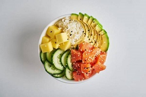

Le poke bowl recette
Ingrédients :
- 200 g de riz
- 3 avocats
- 600 g de saumon cru sans peau ni arêtes
- 1 botte d'oignons frais.1 citron vert non traité ou bio
- 600 g de haricots edamame
- 1 bouquet de coriandre
- 6 cuillère(s) à soupe de graines de sésame
- Pour la sauce :
- 10 cuillère(s) à soupe d'huile de sésame
- 8 cuillère(s) à soupe de vinaigre de riz
- 6 cuillère(s) à soupe de sauce soja
- 1 gousse d'ail hachée.1 noix de gingembre râpé
- 1 morceau de piment frais coupé menu
Préparation :
- Faites bouillir le riz 6 mn dans de l’eau salée, couvrez et laissez gonfler 10 mn.
- Faites cuire les haricots edamame 10 mn dans de l’eau bouillante salée, puis égouttez-les.
- Coupez le saumon en morceaux. Emincez les oignons avec la tige. Ciselez la moitié de la coriandre. Faites griller les graines de sésame dans une poêle à sec.
- Râpez un peu de zeste du citron. Pelez les avocats, coupez-les en morceaux et arrosez-les de jus de citron.
- Mélangez tous les ingrédients de la sauce avec 6 c. à soupe d’eau, le reste de coriandre et le zeste de citron. Pour servir, mettez du riz dans un grand bol, ajoutez tous les ingrédients dessus et nappez de sauce.